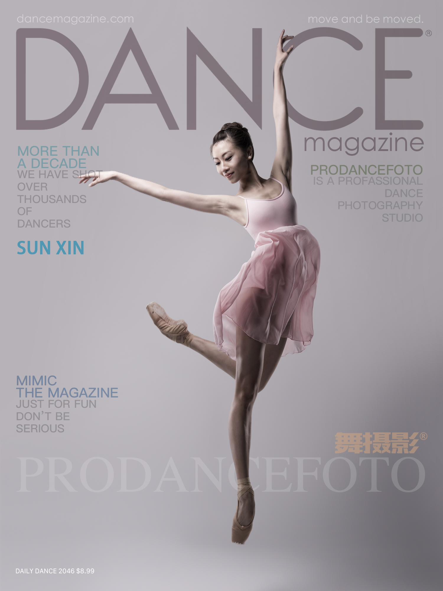
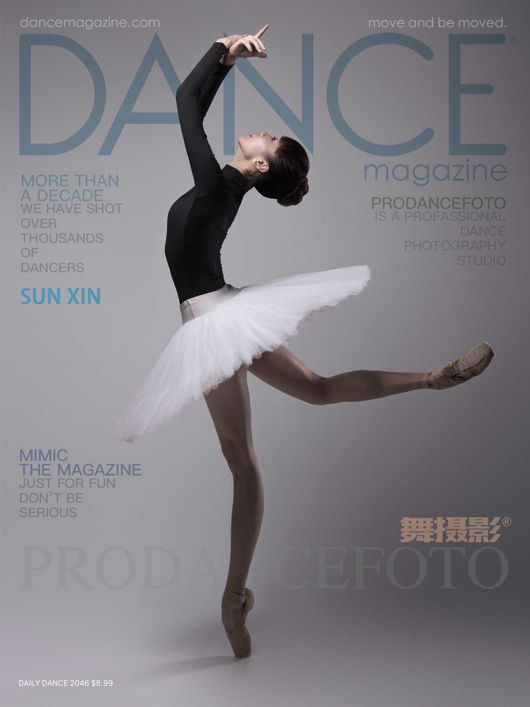

Portfolio Index
全部作品
点击任意作品，进入该舞者 / 系列的专属图集。作品将持续随十年素材库接入而扩充。

孙欣（芭蕾二辑）2016 · 芭蕾 · 广州芭蕾舞团

孙欣2016 · 芭蕾 · 广州芭蕾舞团

孙欣2016 · 芭蕾 · 广州芭蕾舞团
黄平2016 · 古典舞系列
Lisa2016 · 广芭 · 芭蕾
任楠2018 · 民族民间舞
高越2018 · 当代舞
yoyo2018 · 芭蕾
果果2018 · 少儿舞蹈
广芭团体2016 · 院团群像
所有成片均在与舞者签署肖像使用权协议后发布。